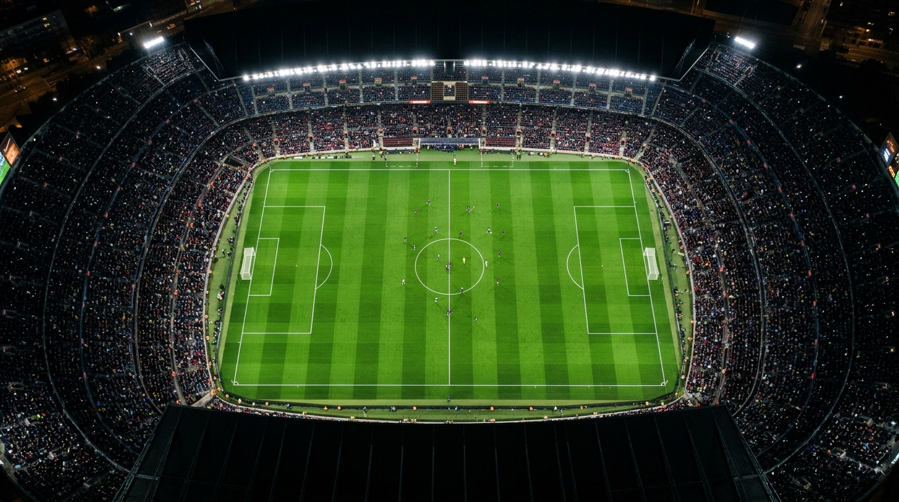

YESTERDAY'S MATCH · LA LIGA
El Clásico Special
Match Analysis
Shot Maps & xG
Passing Networks
Spatial Intelligence
El Clásico 2026/27: How Real Madrid Beat Barcelona Despite Losing the Possession Battle
A data-driven tactical breakdown of FC Barcelona 1–2 Real Madrid (25 October 2026 at Spotify Camp Nou): analyzing shot quality over volume (0.195 vs. 0.066 xG/shot), spatial utilization, defensive resilience, and the decisive 87th-minute transition winner.
Final Score
FC Barcelona 1 — 2 Real Madrid
Expected Goals (xG)
1.19 xG vs 1.95 xG
Possession
62% — 38%
Decisive Factor
87' Transition Winner
OPEN FULL INTERACTIVE MATCH DATA & PITCH MAP